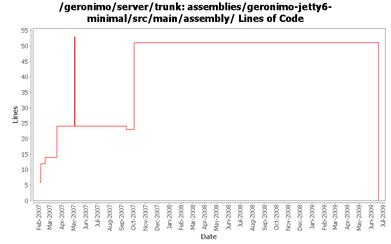

[root]/assemblies/geronimo-jetty6-minimal/src/main/assembly

| Author | Changes | Lines of Code | Lines per Change |
|---|---|---|---|
| Totals | 10 (100.0%) | 131 (100.0%) | 13.1 |
| djencks | 1 (10.0%) | 51 (38.9%) | 51.0 |
| akulshreshtha | 2 (20.0%) | 33 (25.2%) | 16.5 |
| jdillon | 2 (20.0%) | 29 (22.1%) | 14.5 |
| gdamour | 4 (40.0%) | 18 (13.7%) | 4.5 |
| xuhaihong | 1 (10.0%) | 0 (0.0%) | 0.0 |
GERONIMO-4697 Update those folders contained jetty6 to jetty
0 lines of code changed in 1 file:
GERONIMO-3496 assemble servers out of plugins
51 lines of code changed in 1 file:
Fix up some more assembly issues for using gsh
14 lines of code changed in 1 file:
GERONIMO-3123 Reverting 535158 due to tck breakage
2 lines of code changed in 1 file:
GERONIMO-3123 Move the 'var' directory to geronimo0/var and create a copy named template/var in GERONIMO_HOME
31 lines of code changed in 1 file:
Clean up assembly modules usage of resources, use the same filtering
Only install config.xml as writable in assemblies, none of the other files need that
15 lines of code changed in 1 file:
Second attempt to change the way the online/offline deployers and the JSR88
deployment driver work. The first attempt was breaking the TCK amd the
eclipse plugin.
Online deployer, i.e. deployer.jar, boots a Kernel to load its dependencies,
e.g. geronimo-deploy-tool, and registers the available ModuleConfigurers with
the DeploymentManager.
ModuleConfigurers to be registered are loaded by the persistent configuration
list jsr88-configurer-config.xml.
In the case of an offline deployment, the online deployer starts the
offline-deployer configuration within the same Kernel. In turn, the
offline-deployer configuration starts a list of configurations to register
the available module builders.
Add a log4j configuration for the online deployer.
DeploymentFactoryBootstrapper is the new JSR88 deployment driver. It boots a
kernel; starts the configuration list jsr88-configurer-config.xml; retrieves
the "actual" DeploymentFactory implementation from the kernel; and delegates
to this retrieved imoplementation.
The JSR88 JAR driver is now named jsr88-deploymentfactory.jar.
This fixes:
* GERONIMO-2794 - Improve online deployer to register ModuleConfigurers from the repository; and
* GERONIMO-2767 - Minimize side effects of the offline deployer
10 lines of code changed in 1 file:
Revert deployer changes as they do break the Eclipse plugin and TCK.
I will investigate offline.
svn merge -r503370:503369 .
8 lines of code changed in 1 file:
Online deployer, i.e. deployer.jar, boots a Kernel to load its dependencies,
e.g. geronimo-deploy-tool, and registers the available ModuleConfigurers with
the DeploymentManager.
ModuleConfigurers to be registered are loaded by the persistent configuration
list jsr88-configurer-config.xml.
In the case of an offline deployment, the online deployer starts the
offline-deployer configuration within the same Kernel. In turn, the
offline-deployer configuration starts a list of configurations to register
the available module builders.
Add a log4j configuration for the online deployer.
This fixes:
* GERONIMO-2794 - Improve online deployer to register ModuleConfigurers from the repository; and
* GERONIMO-2767 - Minimize side effects of the offline deployer
0 lines of code changed in 2 files: